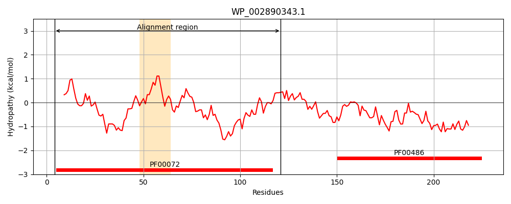
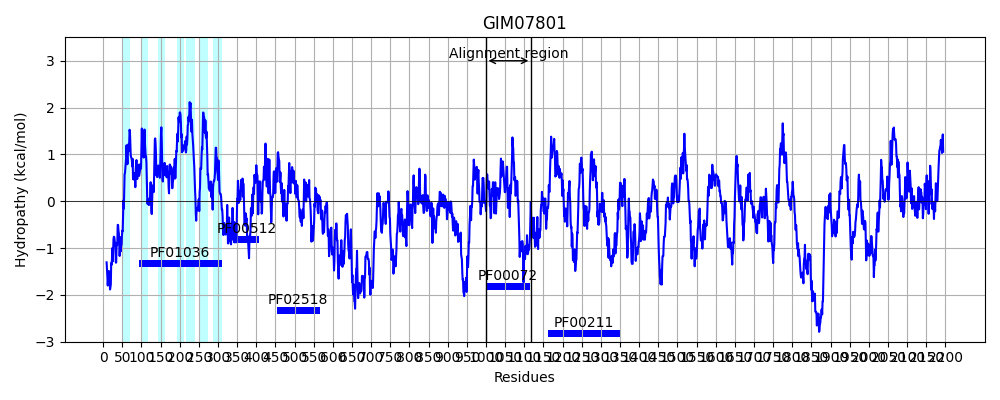
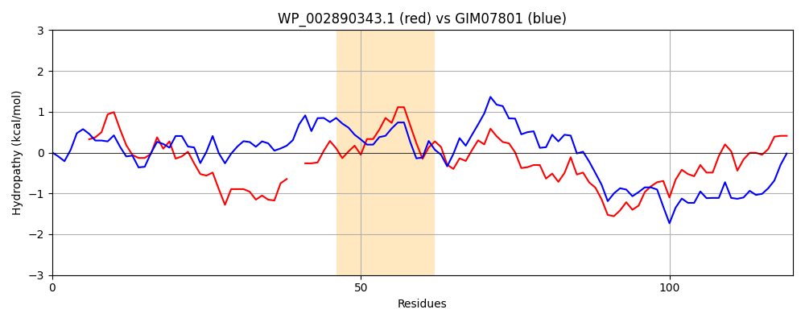

Hit Accession: GIM07801
Hit TCID: 3.E.1.5.3
Hit Description: gnl|BL_ORD_ID|4967 gnl|TC-DB|GIM07801.1|3.E.1.5.3 hypothetical protein Vretimale_11876 [Volvox reticuliferus]
Mach Len: 120
e:0.000000
Query TMS Count : 1
Hit TMS Count: 7
TMS-Overlap Score: 0.000000
Predicted Substrates:None
BLAST Alignment:
| Protein Hydropathy Plots: | |
|---|---|
|  |  |
Pairwise Alignment-Hydropathy Plot: | |
|  | |